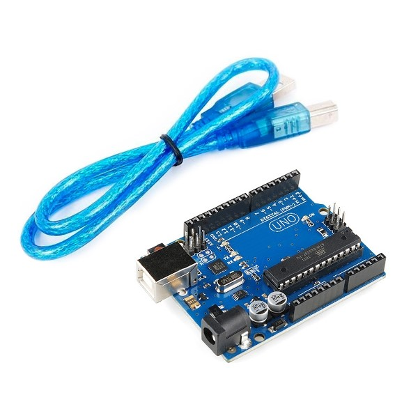

aqui está mostrando produtos que tornará facil a sua procura!
|  | O Arduino Uno R3 é uma placa baseada no microcontrolador Tmega328 (datasheet). Ele tem 14 pinos de entrada/saída digital (dos quais 6 podem ser usados como saídas PWM), 6 entradas analógicas, um cristal oscilador de 16MHz, uma conexão USB, uma entrada de alimentação uma conexão ICSP e um botão de reset. Ele contém todos os componentes necessários para suportar o microcontrolador, simplesmente conecte a um computador pela porta USB ou alimentar com uma fonte ou com uma bateria e tudo pronto para começar.
A Placa Arduino Uno é a melhor placa para aprender e começar a criar seus projetos eletrônicos com programação. O Arduino Uno é uma placa robusta, utilizada mundialmente, conta com uma rica documentação complementar proveniente de Shields, Módulos e Sensores.
|
|---|